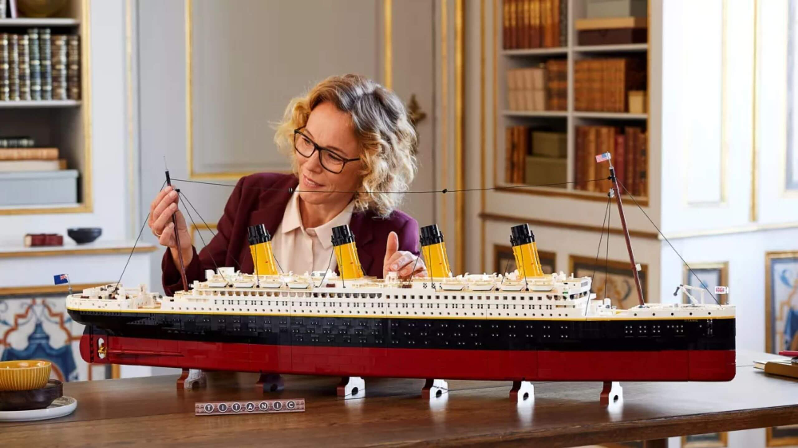
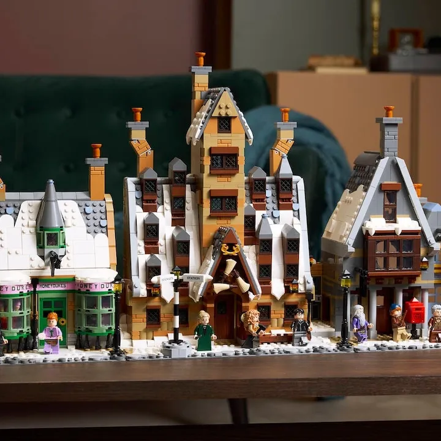
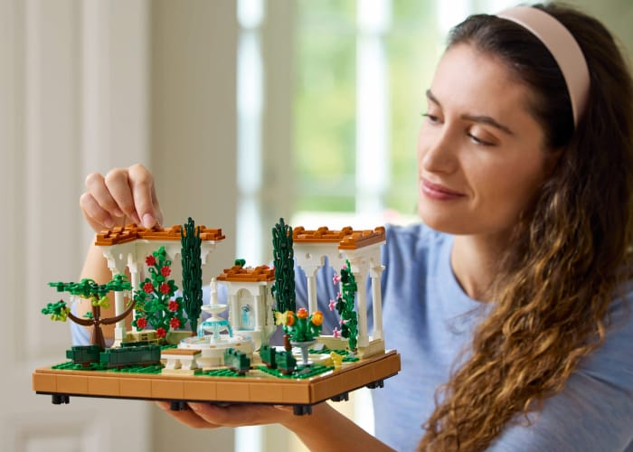
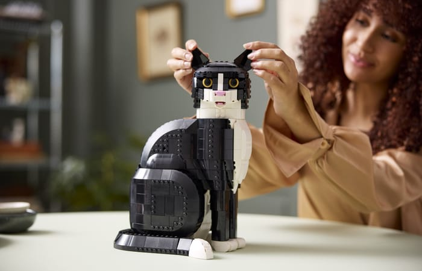
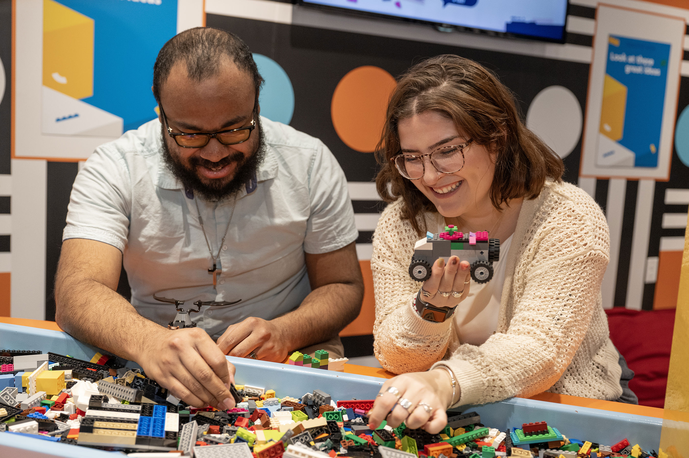

Alle kan komme i gang
Du behøver hverken erfaring eller en stor samling LEGO for at komme i gang. Start med et lille projekt, find plads til kreativiteten, og byg i dit eget tempo.
Det vigtigste er ikke, hvad du bygger, men at du har lyst til at prøve.

Hvad skal du bruge ?
Du behøver ikke en stor samling LEGO for at komme i gang.
Et mindre sæt eller nogle få klodser er et fint sted at starte.
Find et sted med god plads, hvor du kan bygge i ro og mag.
Du kan følge en byggevejledning eller eksperimentere med dine egne idéer.
Det vigtigste er ikke, hvor mange klodser du har, men hvad du har lyst til at skabe.

Tre skridt til at komme i gang
-

Vælg noget enkelt
Start med et lille projekt, der vækker din nysgerrighed. Det behøver ikke være avanceret – det vigtigste er, at du har lyst til at bygge det.
Start med et lille projekt, der vækker din nysgerrighed. Det behøver ikke være avanceret det vigtigste er, at du har lyst til at bygge det.
-

Find dine klodser frem
Skab lidt plads på bordet, og find de klodser frem, du skal bruge. Sortér dem gerne efter farve eller størrelse, så du nemt kan finde rundt.
Skab lidt plads på bordet, og find de klodser frem, du skal bruge. Sortér dem gerne efter farve eller størrelse, så du nemt kan finde rundt.
-

Byg i dit tempo
Tag dig god tid, og nyd processen. Der er ingen grund til at skynde sig, og du må gerne prøve dig frem. LEGO handler også om at have det sjovt undervejs.